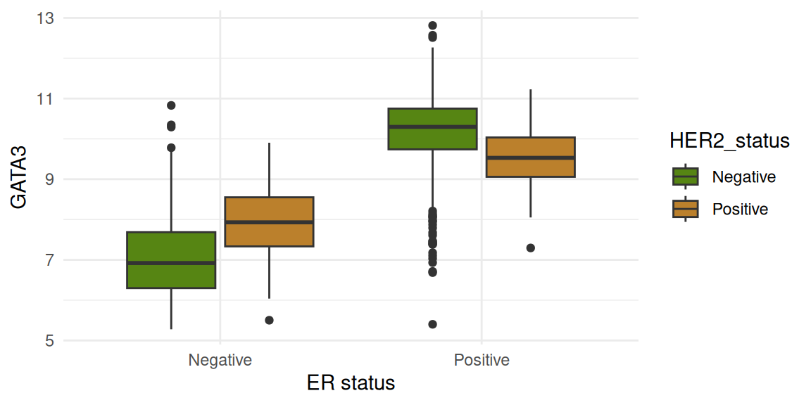
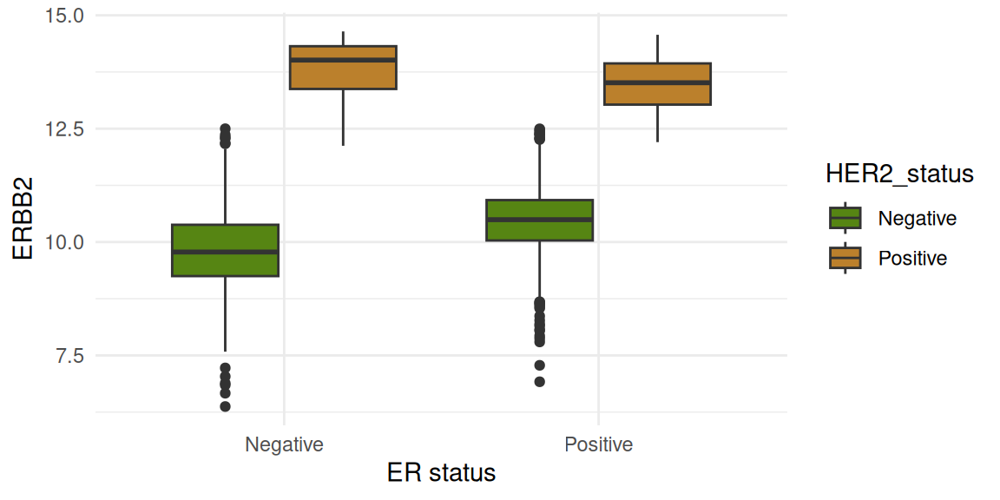
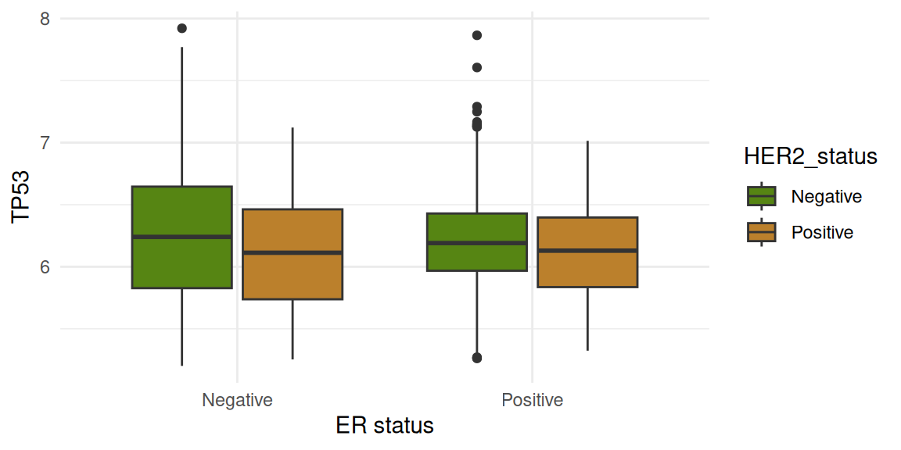

Exploring the Metabric data set
An example of using R Markdown
Ashley D. Sawle
24th April 2025
Code chunk: "setup"Preamble
The purpose of this document is to show how R Markdown can be used to generate a report in HTML format.
The data
We’ll be using an extended version of the METABRIC data set in which columns have been added for the mRNA expression values for selected genes, including estrogen receptor alpha (ESR1), progesterone receptor (PGR), GATA3 and FOXA1.
The METABRIC study characterized the genomic mutations and gene expression profiles for over 2000 primary breast tumours.
Curtis et al., Nature 486:346-52, 2012
Pereira et al., Nature Communications 7:11479, 2016
Both the clinical data and the gene expression values were downloaded from cBioPortal.
metabric <- read_csv("data/metabric_clinical_and_expression_data.csv") %>%
select(Patient_ID,
ER_status,
HER2_status,
`3-gene_classifier`,
PAM50, ESR1, ERBB2, PGR, TP53, PIK3CA, GATA3, FOXA1, MLPH)The table below shows the first few rows of the data for the first 7 columns.
Code chunk: top few rows of table. Note the alignment in the columns.| Patient_ID | ER_status | HER2_status | 3-gene_classifier | PAM50 | ESR1 | ERBB2 |
|---|---|---|---|---|---|---|
| MB-0000 | Positive | Negative | ER-/HER2- | claudin-low | 8.93 | 9.33 |
| MB-0002 | Positive | Negative | ER+/HER2- High Prolif | LumA | 10.05 | 9.73 |
| MB-0005 | Positive | Negative | NA | LumB | 10.04 | 9.73 |
| MB-0006 | Positive | Negative | NA | LumB | 10.40 | 10.33 |
| MB-0008 | Positive | Negative | ER+/HER2- High Prolif | LumB | 11.28 | 9.96 |
| MB-0010 | Positive | Negative | ER+/HER2- High Prolif | LumB | 11.24 | 9.74 |
| MB-0014 | Positive | Negative | NA | LumB | 10.79 | 9.28 |
| MB-0022 | Positive | Negative | NA | claudin-low | 10.44 | 8.61 |
Gene expression by ER status
The figures below show gene expression distribution separated according to ER status. The data are further split by HER2 status.
Four genes are shown:
- ESR1
- ERBB2
- GATA3
- TP53
Code chunks: 1 chunk - set colours for plotting. 4 chunks - one for each plot.ESR1

ERBB2

GATA3
TP53

PAM50 cancer subtype
The PAM50 classification of breast cancer included 5 basic subtypes. An additional “claudin low” subtype is also included in metabric and some tumours are not classified (NC). The seven categories included in metabric are:
| Category | Description |
|---|---|
| Basal | Basal-like |
| Her2 | HER2 enriched |
| LumA | Luminal A |
| LumB | Luminal B |
| NC | Not classified |
| Normal | Normal-like |
| claudin-low | Claudin Low |
The table below shows the mean gene expression for 8 genes across all samples according to their PAM50 cancer subtype.
Code chunk: summarise expression data and generate table| PAM50 | ESR1 | ERBB2 | PGR | TP53 | PIK3CA | GATA3 | FOXA1 | MLPH |
|---|---|---|---|---|---|---|---|---|
| claudin-low | 6.68 | 9.69 | 5.45 | 6.23 | 5.95 | 7.40 | 9.47 | 9.48 |
| LumA | 10.93 | 10.65 | 6.67 | 6.20 | 5.90 | 10.43 | 11.65 | 12.25 |
| LumB | 11.16 | 10.45 | 6.14 | 6.18 | 5.97 | 10.29 | 11.61 | 11.98 |
| Her2 | 7.02 | 13.07 | 5.40 | 6.03 | 5.96 | 8.78 | 11.14 | 11.55 |
| Normal | 9.76 | 10.54 | 5.97 | 6.14 | 5.85 | 9.67 | 11.12 | 11.90 |
| Basal | 6.00 | 9.91 | 5.36 | 6.24 | 6.08 | 7.15 | 6.72 | 8.21 |
| NC | 10.83 | 10.23 | 6.25 | 6.22 | 5.66 | 10.29 | 11.18 | 11.92 |
Three gene classifier
Here we look at GATA3 and ESR1 expression according to the three gene classifier.
Code chunk: 4 plots arranged using `patchwork`. Caption in chunk options.Expression of ESR1 and GATA3 according to 3-gene classifier. (a) Bar plot showing numbers of samples in each category. (b) Scatter plot showing ESR1 expression against GAT3 expression for each sample. (c) Violin plot showing distribution of ESR1 expression. (d) Violin plot showing distribution of GATA3 expression.
END OF REPORT
Session Info
devtools::session_info()## ─ Session info ───────────────────────────────────────────────────────────────
## setting value
## version R version 4.5.0 (2025-04-11)
## os Ubuntu 24.04.2 LTS
## system x86_64, linux-gnu
## ui X11
## language (EN)
## collate en_US.UTF-8
## ctype en_US.UTF-8
## tz Europe/London
## date 2025-04-25
## pandoc 3.1.3 @ /usr/bin/ (via rmarkdown)
## quarto NA
##
## ─ Packages ───────────────────────────────────────────────────────────────────
## package * version date (UTC) lib source
## bit 4.6.0 2025-03-06 [1] CRAN (R 4.5.0)
## bit64 4.6.0-1 2025-01-16 [1] CRAN (R 4.5.0)
## bslib 0.9.0 2025-01-30 [1] CRAN (R 4.5.0)
## cachem 1.1.0 2024-05-16 [1] CRAN (R 4.5.0)
## cli 3.6.4 2025-02-13 [1] CRAN (R 4.5.0)
## colorspace 2.1-1 2024-07-26 [1] CRAN (R 4.5.0)
## crayon 1.5.3 2024-06-20 [1] CRAN (R 4.5.0)
## devtools 2.4.5 2022-10-11 [1] CRAN (R 4.5.0)
## digest 0.6.37 2024-08-19 [1] CRAN (R 4.5.0)
## dplyr * 1.1.4 2023-11-17 [1] CRAN (R 4.5.0)
## ellipsis 0.3.2 2021-04-29 [1] CRAN (R 4.5.0)
## evaluate 1.0.3 2025-01-10 [1] CRAN (R 4.5.0)
## farver 2.1.2 2024-05-13 [1] CRAN (R 4.5.0)
## fastmap 1.2.0 2024-05-15 [1] CRAN (R 4.5.0)
## forcats * 1.0.0 2023-01-29 [1] CRAN (R 4.5.0)
## fs 1.6.6 2025-04-12 [1] CRAN (R 4.5.0)
## generics 0.1.3 2022-07-05 [1] CRAN (R 4.5.0)
## ggplot2 * 3.5.2 2025-04-09 [1] CRAN (R 4.5.0)
## glue 1.8.0 2024-09-30 [1] CRAN (R 4.5.0)
## gtable 0.3.6 2024-10-25 [1] CRAN (R 4.5.0)
## hms 1.1.3 2023-03-21 [1] CRAN (R 4.5.0)
## htmltools 0.5.8.1 2024-04-04 [1] CRAN (R 4.5.0)
## htmlwidgets 1.6.4 2023-12-06 [1] CRAN (R 4.5.0)
## httpuv 1.6.16 2025-04-16 [1] CRAN (R 4.5.0)
## jquerylib 0.1.4 2021-04-26 [1] CRAN (R 4.5.0)
## jsonlite 2.0.0 2025-03-27 [1] CRAN (R 4.5.0)
## kableExtra * 1.4.0 2024-01-24 [1] CRAN (R 4.5.0)
## knitr * 1.50 2025-03-16 [1] CRAN (R 4.5.0)
## labeling 0.4.3 2023-08-29 [1] CRAN (R 4.5.0)
## later 1.4.2 2025-04-08 [1] CRAN (R 4.5.0)
## lifecycle 1.0.4 2023-11-07 [1] CRAN (R 4.5.0)
## lubridate * 1.9.4 2024-12-08 [1] CRAN (R 4.5.0)
## magrittr 2.0.3 2022-03-30 [1] CRAN (R 4.5.0)
## memoise 2.0.1 2021-11-26 [1] CRAN (R 4.5.0)
## mime 0.13 2025-03-17 [1] CRAN (R 4.5.0)
## miniUI 0.1.2 2025-04-17 [1] CRAN (R 4.5.0)
## munsell 0.5.1 2024-04-01 [1] CRAN (R 4.5.0)
## patchwork * 1.3.0 2024-09-16 [1] CRAN (R 4.5.0)
## pillar 1.10.2 2025-04-05 [1] CRAN (R 4.5.0)
## pkgbuild 1.4.7 2025-03-24 [1] CRAN (R 4.5.0)
## pkgconfig 2.0.3 2019-09-22 [1] CRAN (R 4.5.0)
## pkgload 1.4.0 2024-06-28 [1] CRAN (R 4.5.0)
## profvis 0.4.0 2024-09-20 [1] CRAN (R 4.5.0)
## promises 1.3.2 2024-11-28 [1] CRAN (R 4.5.0)
## purrr * 1.0.4 2025-02-05 [1] CRAN (R 4.5.0)
## R6 2.6.1 2025-02-15 [1] CRAN (R 4.5.0)
## Rcpp 1.0.14 2025-01-12 [1] CRAN (R 4.5.0)
## readr * 2.1.5 2024-01-10 [1] CRAN (R 4.5.0)
## remotes 2.5.0 2024-03-17 [1] CRAN (R 4.5.0)
## rlang 1.1.6 2025-04-11 [1] CRAN (R 4.5.0)
## rmarkdown 2.29 2024-11-04 [1] CRAN (R 4.5.0)
## rstudioapi 0.17.1 2024-10-22 [1] CRAN (R 4.5.0)
## sass 0.4.10 2025-04-11 [1] CRAN (R 4.5.0)
## scales 1.3.0 2023-11-28 [1] CRAN (R 4.5.0)
## sessioninfo 1.2.3 2025-02-05 [1] CRAN (R 4.5.0)
## shiny 1.10.0 2024-12-14 [1] CRAN (R 4.5.0)
## stringi 1.8.7 2025-03-27 [1] CRAN (R 4.5.0)
## stringr * 1.5.1 2023-11-14 [1] CRAN (R 4.5.0)
## svglite 2.1.3 2023-12-08 [1] CRAN (R 4.5.0)
## systemfonts 1.2.2 2025-04-04 [1] CRAN (R 4.5.0)
## tibble * 3.2.1 2023-03-20 [1] CRAN (R 4.5.0)
## tidyr * 1.3.1 2024-01-24 [1] CRAN (R 4.5.0)
## tidyselect 1.2.1 2024-03-11 [1] CRAN (R 4.5.0)
## tidyverse * 2.0.0 2023-02-22 [1] CRAN (R 4.5.0)
## timechange 0.3.0 2024-01-18 [1] CRAN (R 4.5.0)
## tzdb 0.5.0 2025-03-15 [1] CRAN (R 4.5.0)
## urlchecker 1.0.1 2021-11-30 [1] CRAN (R 4.5.0)
## usethis 3.1.0 2024-11-26 [1] CRAN (R 4.5.0)
## vctrs 0.6.5 2023-12-01 [1] CRAN (R 4.5.0)
## viridisLite 0.4.2 2023-05-02 [1] CRAN (R 4.5.0)
## vroom 1.6.5 2023-12-05 [1] CRAN (R 4.5.0)
## withr 3.0.2 2024-10-28 [1] CRAN (R 4.5.0)
## xfun 0.52 2025-04-02 [1] CRAN (R 4.5.0)
## xml2 1.3.8 2025-03-14 [1] CRAN (R 4.5.0)
## xtable 1.8-4 2019-04-21 [1] CRAN (R 4.5.0)
## yaml 2.3.10 2024-07-26 [1] CRAN (R 4.5.0)
##
## [1] /home/sawle01/R/x86_64-pc-linux-gnu-library/4.5
## [2] /usr/local/lib/R/site-library
## [3] /usr/lib/R/site-library
## [4] /usr/lib/R/library
## * ── Packages attached to the search path.
##
## ──────────────────────────────────────────────────────────────────────────────